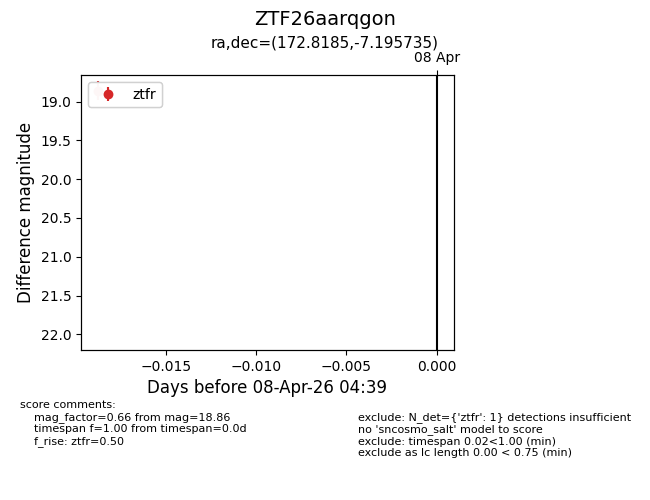
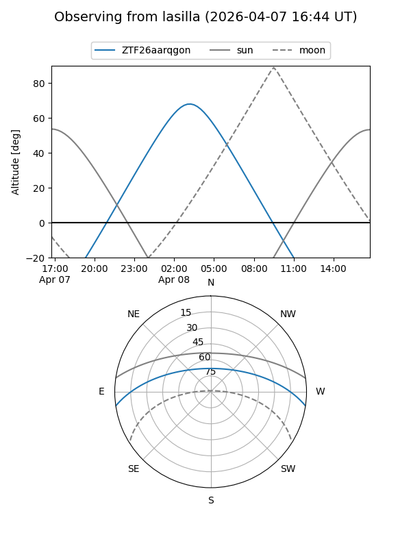
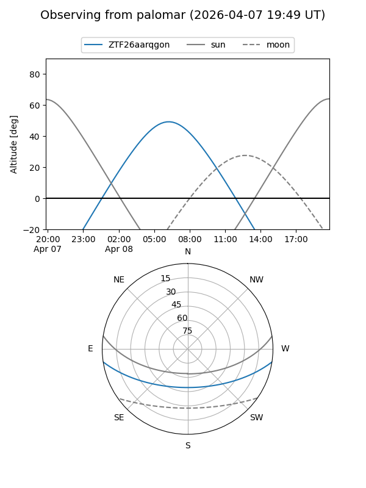

ZTF26aarqgon
Target ZTF26aarqgon at 2026-04-08 04:45
Aliases and brokers:
FINK: link
Lasair: link
ALeRCE: link
alt names
ZTF26aarqgon (ztf,fink_ztf)
Coordinates:
equatorial (ra, dec) = 172.8185,-7.19573
equatorial (HMS+DMS) = 11:31:16.43,-07:11:44.64
galactic (l, b) = (270.5674,+50.56952)
Flags:
Photometry:
last ztfr=18.86
1 ztfr detections
Lightcurve

Visibility


Additional plots